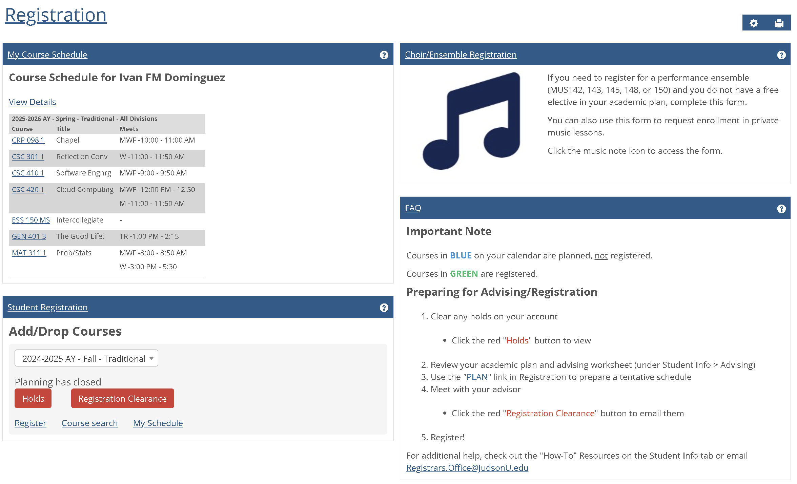
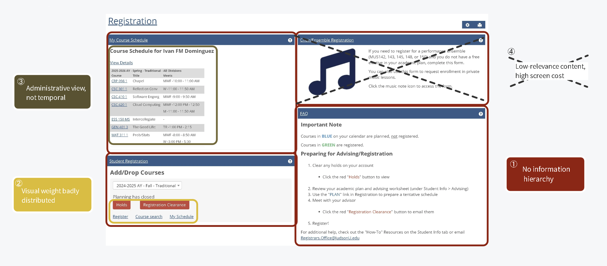
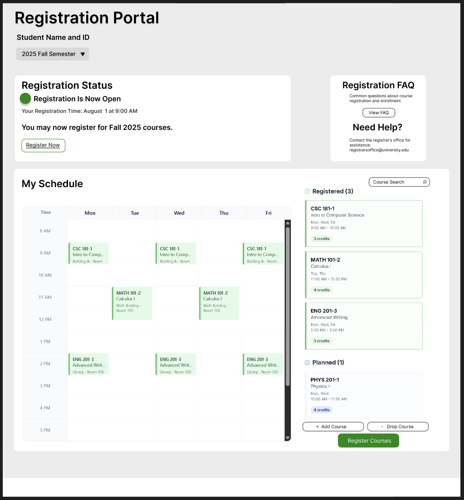
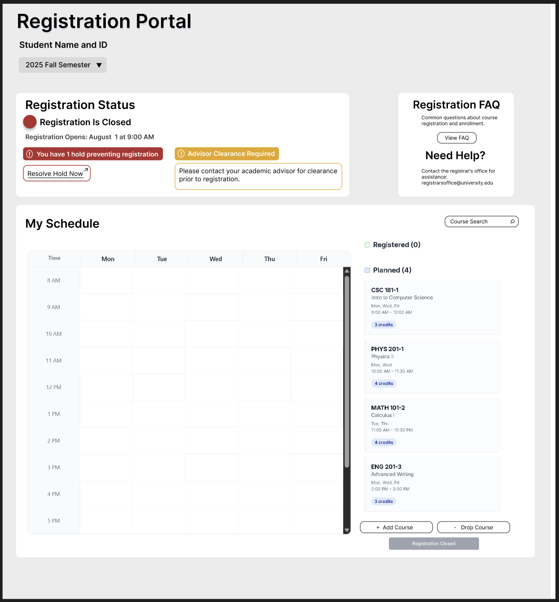

The problem with the existing portal
Judson University's registration portal put every possible piece of information on one screen — with no visual hierarchy, no urgency signals, and no clear path to action. Students consistently got confused and called support instead of completing registration themselves.
"The dashboard attempts to be everything to everyone. Instead, it should contextually adapt to what each student needs."

Fig. 1 — The original Judson University registration portalFour competing content panels with identical visual weight. Critical action buttons buried next to low-priority links. A Choir/Ensemble banner consuming 25% of screen space relevant to less than 5% of students. A course schedule presented as a table — not a calendar — making time planning nearly impossible.
Listening to real students
I gathered insights through informal conversations with peers during registration periods. Three distinct patterns emerged, each revealing a different kind of failure in the existing interface.
- Confused by four content areas with identical visual weight
- Clicks "View Details" under schedule out of habit
- Misses the red "Holds" button — it's below the fold
- Can't locate their registration time ticket
- Immediate overwhelm — no clear entry point
- Reads entire FAQ section looking for "how to register"
- Doesn't realize the Student Registration box is where actions live
- Assumes the site is broken
- Needs to see registered and planned courses side-by-side
- Current table only shows administrative data
- Must navigate to separate page for weekly calendar view
- Can't compare "registered" vs "planned" in one view
The common thread across all three profiles: the interface forced users to hunt for information rather than surfacing what they needed based on context. A student with a hold needed to see that immediately. A student planning their schedule needed a visual calendar. The original portal gave everyone the same cluttered view regardless of their situation.
Four root failures
I annotated the original interface to trace each user frustration back to a specific structural or visual design decision. Four distinct issues accounted for the majority of confusion.

Fig. 2 — Annotated analysis of the original portal identifying four root UX failures| # | Issue | Evidence |
|---|---|---|
| ① | No information hierarchy | All 4 dashboard sections compete for attention with identical visual weight — there is no clear path through the page |
| ② | Action discoverability failure | Critical buttons ("Holds", "Registration Clearance") are styled the same size as passive links ("Register", "Course search") |
| ③ | Administrative schedule view | Table layout shows course codes and meeting times in rows — useful for admins, not for students trying to visualize their week |
| ④ | Low-relevance content, high screen cost | Choir/Ensemble banner consumes ~25% of total screen real estate, relevant to under 5% of users |
"The interface presents all possible information simultaneously, forcing users to parse irrelevant content to find their specific need — instead of adapting to what each student actually requires."
Designing the solution in Figma
The redesign focused on one core principle: surface what matters right now for this student, and get everything else out of the way. I designed two key states — registration open, and registration closed with holds — to address the most critical moments students face.
Registration status card is the first thing students see — large, prominent, with a clear status indicator and primary action button.
When a hold exists, it's shown as a high-contrast alert with a direct "Resolve Hold Now" link — not buried below the fold.
Replaced the administrative table with a time-grid calendar. Students can see their week at a glance and understand scheduling conflicts instantly.
A sidebar shows both registered and planned courses together, with color coding — solving the back-and-forth navigation problem directly.

